Anleitung USB-Stick teilweise verschlüsseln
In diesem Teil möchte ich aufzeigen, wie einfach es ist, die Daten mit dem kostenlosen Tool TrueCrypt zu verschlüsseln.
Allerdings habe ich die Anforderung, dass ich den Stick auf jedem beliebigen Windows-PC, also auch bei Freunden oder in der Firma, wenn erlaubt, einsetzen möchte, ohne eine Software installieren zu müssen. Dies ist realisierbar, indem wir den USB-Stick nicht komplett verschlüsseln, sondern nur einen Teilbereich.
Vorbereitungen:
Konkret bedeutet dies, das wir einen sogenannten Container erstellen und auf dem für alle sichtbaren Bereich eine direkt ausführbare Version von TrueCrypt hinterlegen, welche keine Installation erfordert. An dieser Stelle möchte ich darauf hinweisen, dass trotzdem Administrator-Rechte auf dem jeweiligen PC notwendig sind, um TrueCrypt erfolgreich und sicher ausführen zu können.
Hierzu machen wir uns einfach die aktuelle portable Version (7.1 stable) von TrueCrypt zu nutze, welche man hier laden kann. Um die Echtheit der Herkunft des Downloads zu prüfen, sei an dieser Stelle an folgenden Link verwiesen.
Der nun geladene Installer lässt sich lokal installieren oder als portable Version extrahieren:
Zunächst starten wir die Datei TrueCrypt Setup 7.1.exe und bestätigen die Lizenzbedingungen. Im nächsten Schritt wählen wir Extract und klicken auf ‘Next’. Abschließend wählen wir den Ordner, in welchem die TrueCrypt-Dateien zunächst kopiert werden sollen.
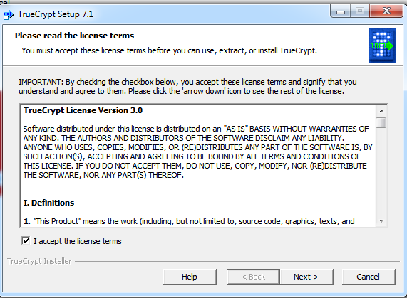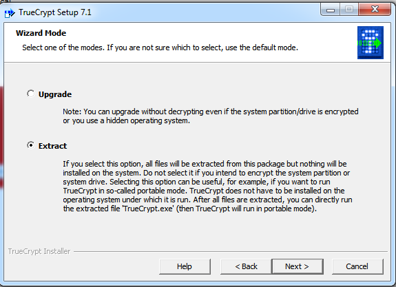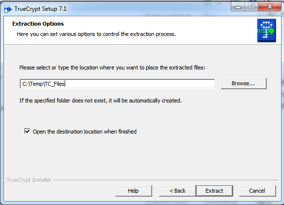
Nun widmen wir uns dem USB-Stick. Ich gehe hier davon aus, dass der USB-Stick neu bzw. leer ist. Wenn nicht, bitte vorher alle Daten auf den PC kopieren, sodass der USB-Stick leer ist und bei einem Fehler keine Daten versehentlich gelöscht werden.
Wir erstellen auf dem USB-Stick nun einen neuen Ordner mit dem Namen Secure. In diesen Ordner kopieren wir die vorher nach C:\Temp\TC_Files bzw. in den von Ihnen angegebenen Ordner extrahieren Daten hinein und starten die Datei TrueCrypt.exe.
Wer möchte kann sich hier die aktuelle deutsche Sprachdatei bzw. hier seine bevorzugte Sprachdatei laden und ebenfalls in den Ordner Secure auf den USB-Stick kopieren. Die Standardeinstellung ist ansonsten Englisch.
TrueCrypt-Container erstellen:
Volumen erstellen klicken
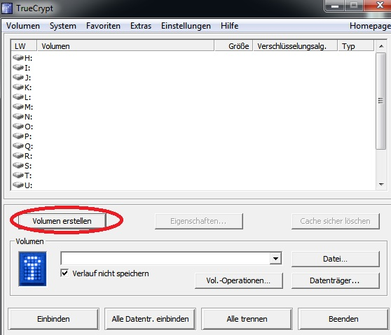- Eine verschlüsselte Containerdatei erstellen wählen
- Weiter klicken
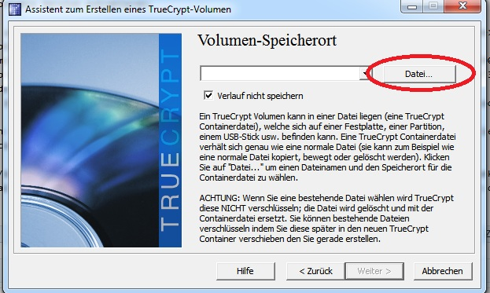
- Als Pfad auf den USB-Stick in den Ordner
Securegehen - Dateinamen für Container-Datei eingeben, z.B.
Daten - Speichern klicken
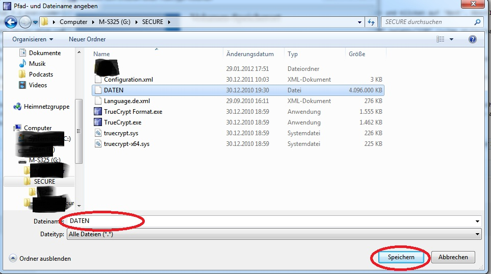
- Als Pfad auf den USB-Stick in den Ordner
Weiter klicken
Hinweis: Die Standardeinstellungen sind ausreichend. Mehr Informationen findet man hier und hier.
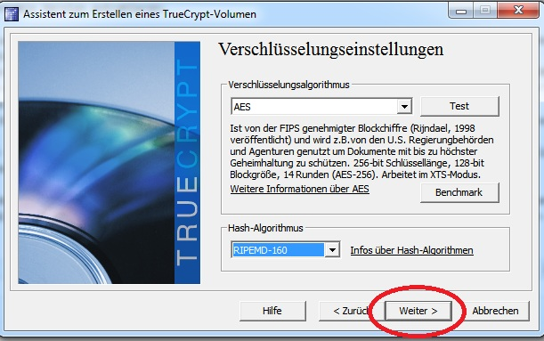- Die Größe des Containers als ganze Zahl eingeben. Der maximale Speicherplatz steht in Fettschrift darunter. Ich würde mindestens 100 MB frei lassen.
- Weiter klicken
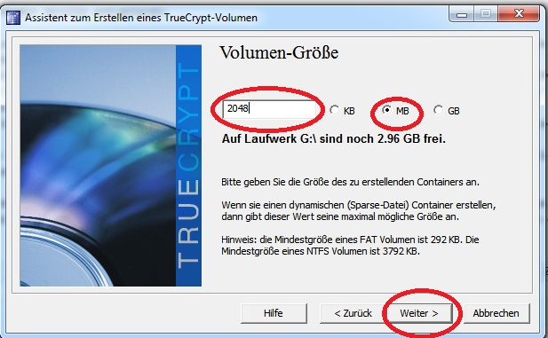
- Nun muss eine Passphrase eingeben werden. Ein gutes Kennwort erstellt man am besten, indem man einen für sich einfach zu merkenden Satz wählt mit Groß- und Kleinschreibung, ein paar Zahlen und Sonderzeichen. Ich habe hier folgendes gewählt:
MiteinemSatzkannmansichesgutmerken2012. - Weiter klicken
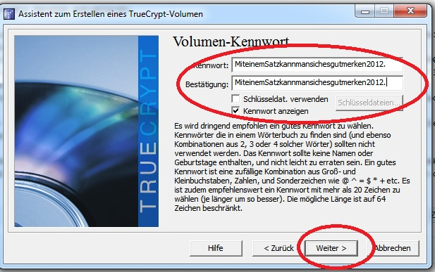
- Nun muss eine Passphrase eingeben werden. Ein gutes Kennwort erstellt man am besten, indem man einen für sich einfach zu merkenden Satz wählt mit Groß- und Kleinschreibung, ein paar Zahlen und Sonderzeichen. Ich habe hier folgendes gewählt:
- Anschließend wählt man das Datei-System der Container-Datei. Hier sollte
FATnur gewählt werden, wenn man weiß, dass man den Stick auf einem alten Rechner mitFat32Dateisystem benutzt, ansonsten istNTFSdie richtige Wahl. - Nun sollte man die Maus mindestens 30 Sekunden in dem aktiven Fenster hin und her bewegen. Dies trägt zu einer verbesserten Verschlüsselung vorbei.
- Danach auf Formatieren klicken. Die Dauer dieses Vorgangs ist abhängig von der gewählten Größe und kann zwischen wenigen Minuten und mehreren Stunden dauern. Hier ist also Geduld gefragt!
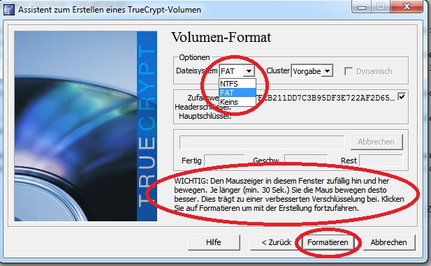
- Anschließend wählt man das Datei-System der Container-Datei. Hier sollte
Wenn die Formatierung abgeschlossen ist, muss man die Erfolgsmeldung per Klick auf OK quittieren.
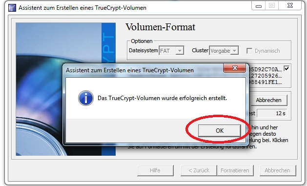Abschließend per Klick auf Beenden die Prozedur schließen.
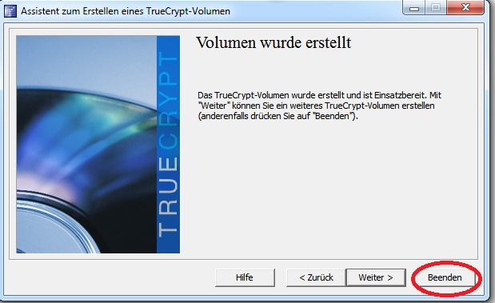
Das wäre also geschafft. Jetzt schauen wir uns an, wie man den Container in der Praxis benutzt. Weiterlesen…